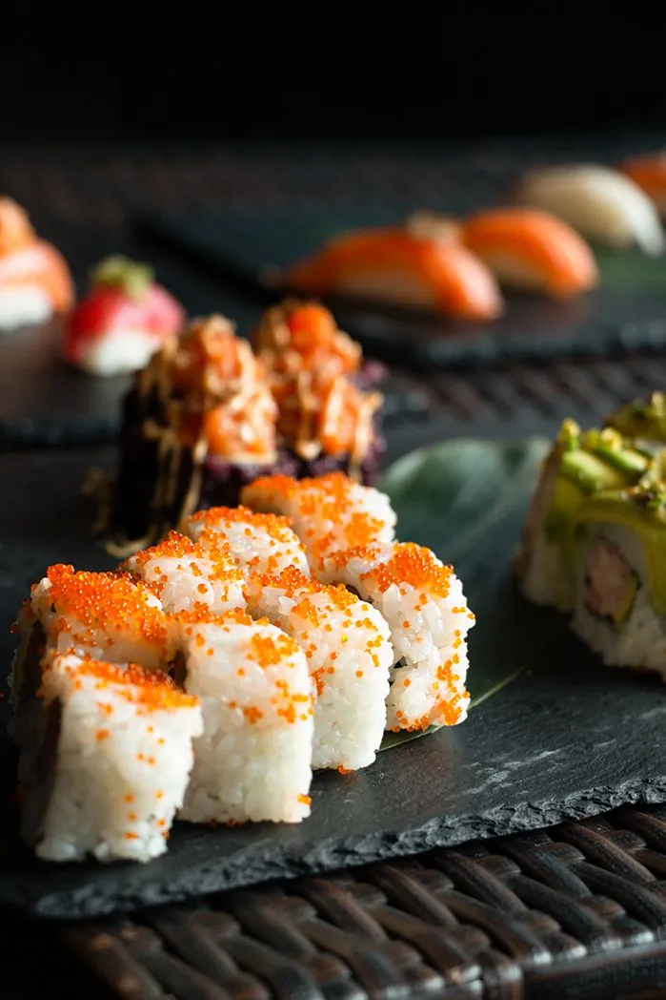
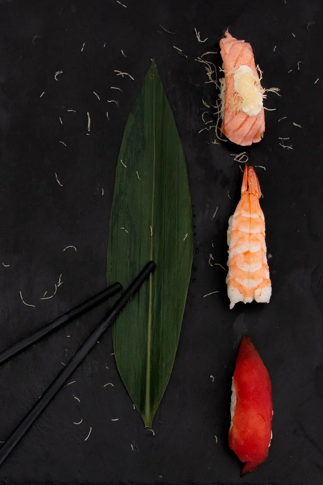
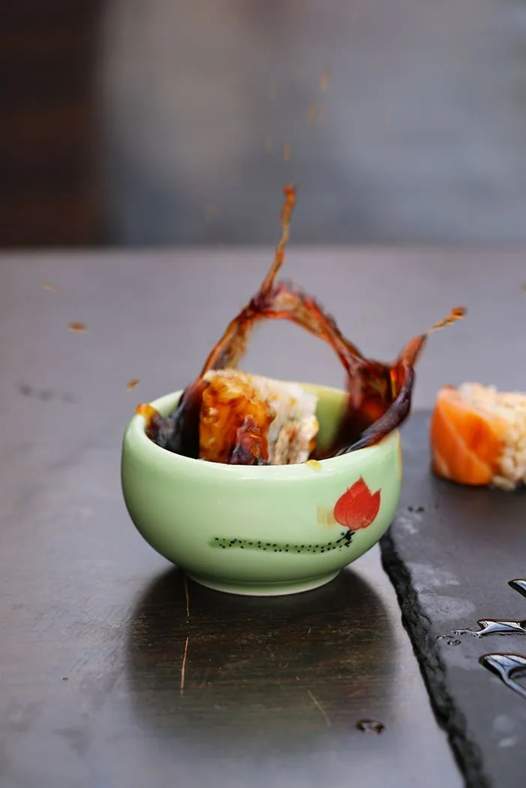
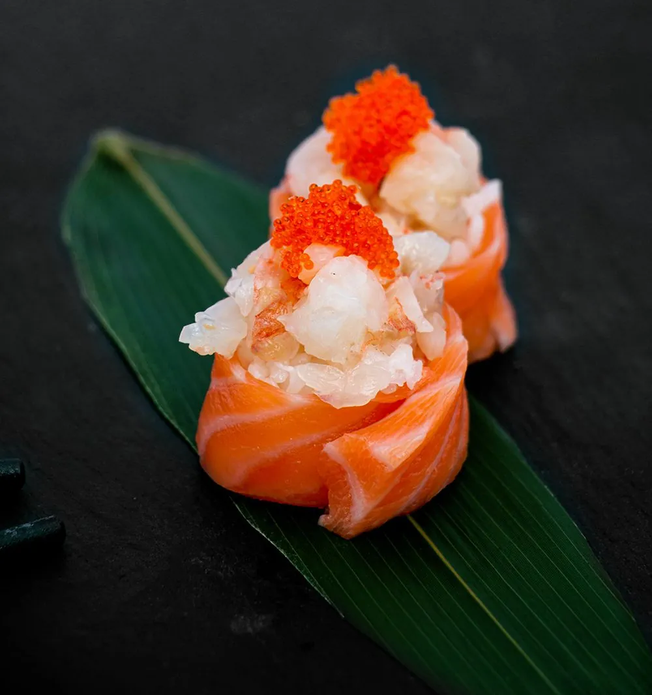
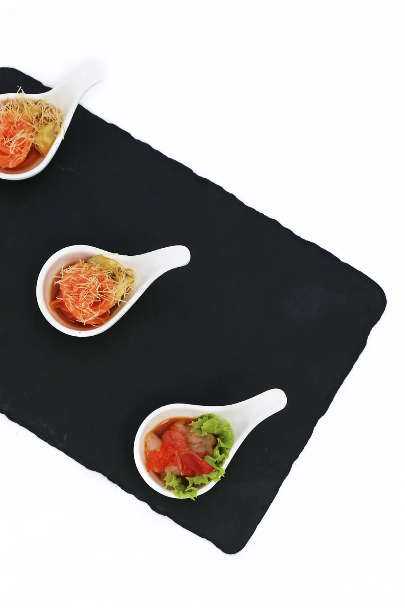
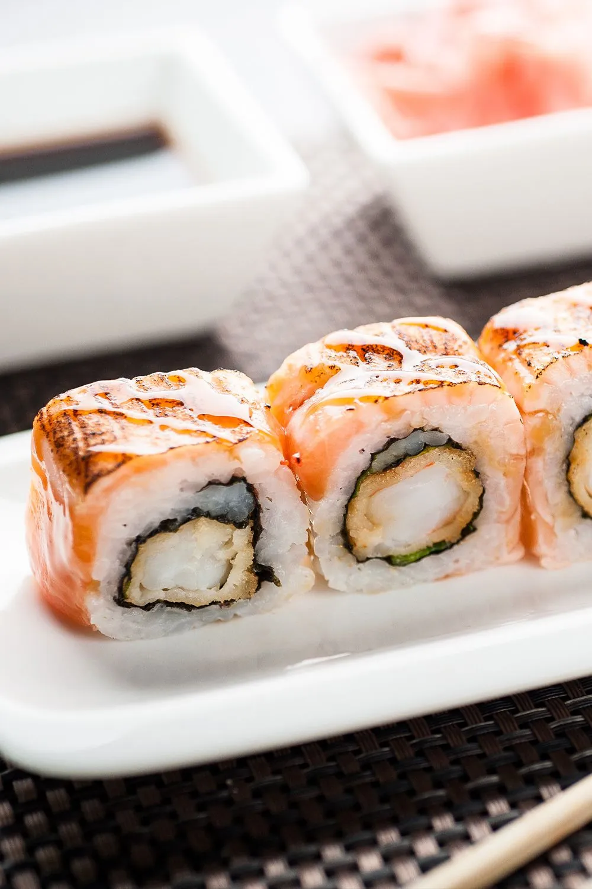
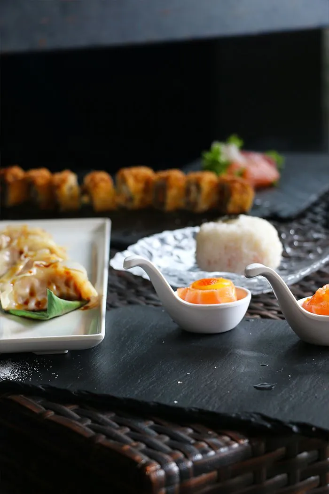

Sushi · crudi · cucina fusion
Non il solito sushi delivery
Preparato al momento e portato a casa tua, oppure pronto da ritirare. A Vimercate, Cernusco sul Naviglio e Saronno.
La cucina
Tradizione e passione creano sapori unici.
Mumi è prima di tutto un’esperienza fusion per il palato. L’attenzione per le materie prime è il punto di partenza di ogni piatto: cucina giapponese e cinese, dal sushi ai fritti, preparata nel rispetto delle ricette tradizionali e con ingredienti di prima scelta.







I ristoranti
Scegli il tuo Mumi.
Stato e orari di oggi in tempo reale. Ogni ristorante ha il suo menu e il suo sito d’ordine.
Come ordinare
Come ti piace mangiare?
- 01
A domicilio
Scegli il ristorante più vicino e inserisci l’indirizzo: ti portiamo tutto a casa, caldo e appena preparato.
- 02
Da asporto
Ordina online e passa a ritirare all’orario che preferisci, senza fare la fila.
- 03
Con l’app
Riordina i tuoi piatti in un tocco, segui l’ordine e accumula punti fedeltà.
Mumi
in tasca.
Un’unica app per tutti e tre i ristoranti: ordini più veloci, offerte riservate e punti fedeltà.